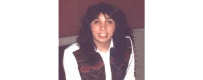

"Terapia de Conciencia Expandida"
una terapia del alma
Sobre la Lic. Cheistwer
Mi padre; que era viajante; una vez me pidió que no leyera el libro que él estaba leyendo en su ausencia. Este libro era "Vida después de la Vida" del Dr. Raymond Moody. Por supuesto; como cualquier criatura hubiera hecho; tan pronto como se fue me devoré el libro, me encantó pero como muchas otras cosas el rumbo quedó latente.
Mientras tanto intenté muchos caminos; quise ser Rabina, pero decidí que mi templo no sería multitudinario sino que preferí reducirlo al diván del psicólogo; fue así como me recibí de psicóloga en 1989. Trabajé en el Hospital neuropsiquiátrico de mujeres Dr. Braulio Moyano en los servicios Magnan ( internación a mediano plazo) y en los consultorios externos donde utilicé los tratamientos tradicionales a las diferentes patologías.
En 1993 escuché un reportaje al Dr. José Luis Cabouli y decidí que ese era mi camino. Estudié con él, haciendo un profundo análisis sobre mi misma y a partir de 1994 comencé a utilizar las técnicas de regresión con mis pacientes particulares viendo que resultaban sumamente efectivas. Hoy en día también utilizo estas técnicas en las clínicas de capital y gran Buenos Aires donde trabajo, en mi consultorio particular y en todos los sitios dentro y fuera del país donde solicitan mi atención.
En determinado momento llegó a mi consultorio un ser de luz que se expresaba a través de uno de mis pacientes y que se presentó como Cabel y escribí lo que él me dictaba. Después me pidió que lo publicara y le di forma de libro mas no conseguí que fuera publicado. Después de Cabel llegaron otros guías y todos insistían en la necesidad de publicar los dichos de Cabel hasta que uno de ellos me propuso que lo hiciera a través de Internet. Así nació este sitio, con el objetivo de llevar un poco de luz a todos quienes estuvieran dispuestos a escuchar. Espero que lo disfrutes y que te ayude a comprender que todos somos uno, que yo soy vos y vos sos yo y todos somos un cachito de Díos y por eso mismo merecemos respeto y amor.
Top 
Seguime en Facebook

Tapping


Bajar Player.